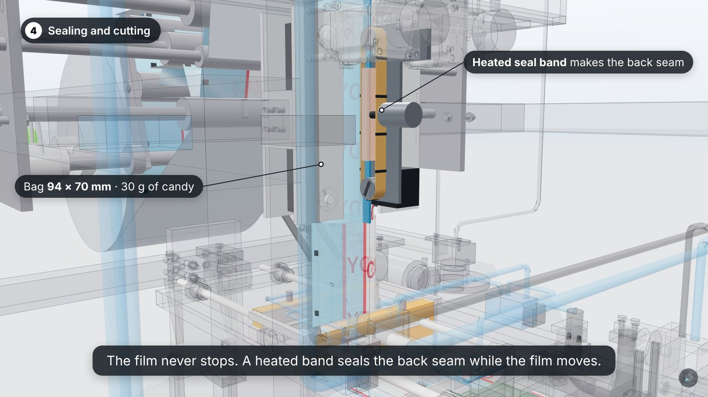

1Film, 3D model and website

The machine film 90 s · 8 scenes
The real CAD model working step by step. Click Start inside it. Press P for presentation mode (one scene per click).
Our film, the 3D model, the live website demo and the short animations. Everything opens on this page.

The real CAD model working step by step. Click Start inside it. Press P for presentation mode (one scene per click).
We scored six ways to measure the candy. The linear weigher (weigh buckets) scored highest, 3.95 of 5.